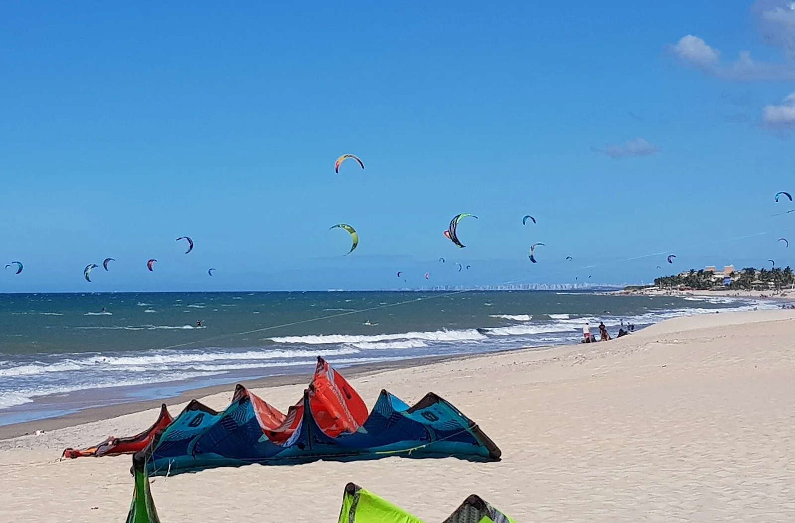

Cumbuco
Ceará, Brésil · kitesurf, windsurf

Spot brésilien réputé : vent puissant et régulier, lagunes d’eau douce et longues sessions downwind.
- Lieu
- Ceará, Brésil
- Niveau
- Intermédiaire
- Activités
- kitesurf, windsurf
- Type d'eau
- Mer / océan
- Coordonnées
- -3.62, -38.73 (position approximative du secteur)
Dangers à connaître
- Vent fort soutenu plusieurs heures.
- Buggys et baigneurs sur la plage.
Le conseil d'Ocean Buddy
Profite des lagunes (Cumbuco, Lagoinha) pour le flat.
Ouvrir dans Ocean Buddy Télécharger sur l'App Store
Source : Description historique Ocean Buddy · vérification externe en attente.